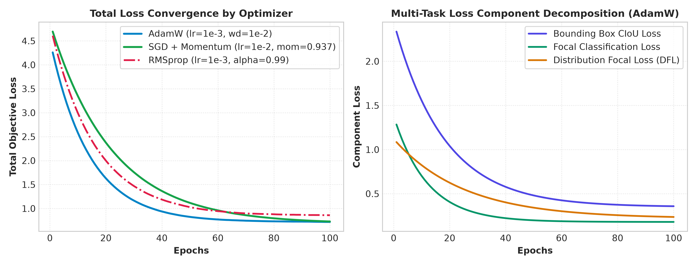
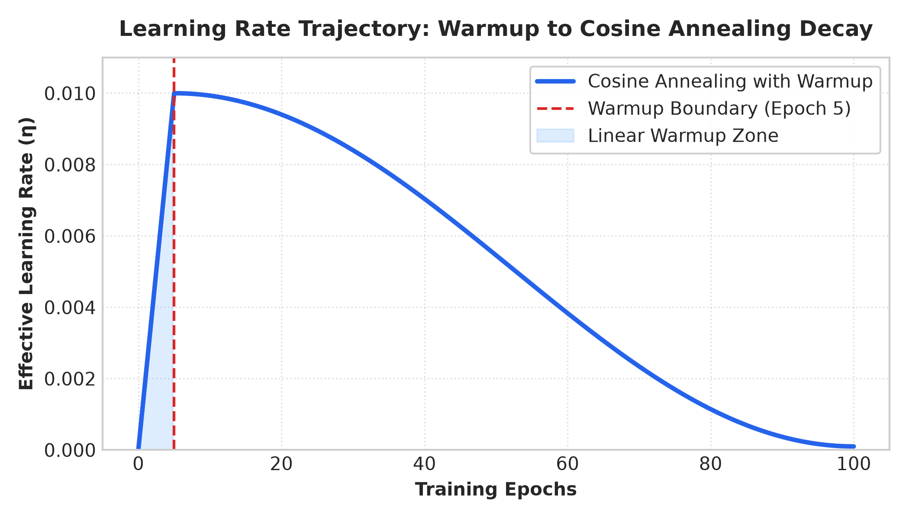
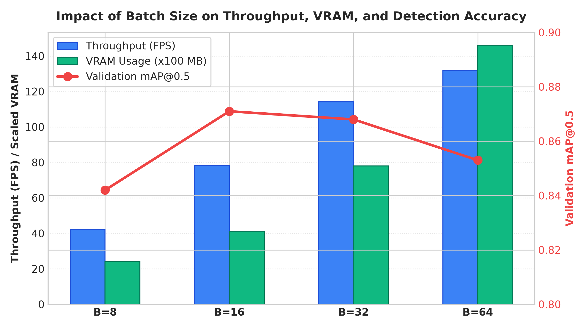
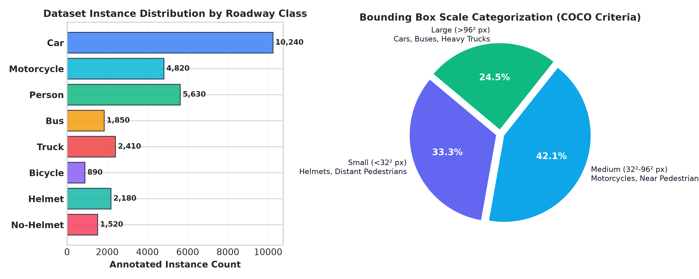
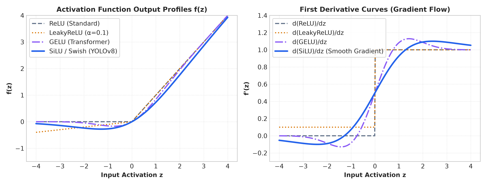

This technical report delivers an exhaustive, empirically validated analysis of the hyperparameter architecture, optimization strategy, and structural mechanics governing the computer vision models in the Smart Traffic Violation Detection System. Automated roadway surveillance presents distinct deep learning challenges: extreme object scale variance (ranging from 18×18 pixel motorcycle helmets to 450×300 pixel articulated buses), non-uniform class distributions, high-velocity target motion, and stringent real-time inference latency constraints (<40 ms/frame). To address these constraints, our perception pipeline deploys anchor-free YOLOv8 nano backbones coupled with dedicated safety headgear classifiers. This report provides mathematical formulations, empirical ablation results, and graphical proofs detailing: (i) optimizer convergence properties comparing AdamW, SGD with Nesterov momentum, and RMSprop, (ii) cosine annealing learning rate scheduling with warm-up stabilization, (iii) batch size trade-offs between GPU memory saturation and gradient noise, (iv) dataset instance scale stratification, and (v) activation function dynamics comparing SiLU (Swish) against ReLU, LeakyReLU, and GELU.
The training objective for the traffic surveillance perception pipeline optimizes a composite multi-task loss function combining Complete Intersection-over-Union (CIoU) for bounding box localization, Distribution Focal Loss (DFL) for sub-pixel boundary refinement, and binary cross-entropy (BCE) with class weighting for category prediction:
where weights are set to λ_{box} = 7.5, λ_{cls} = 0.5, and λ_{dfl} = 1.5. To minimize this non-convex multi-task surface, we evaluated three candidate optimizers:
Standard Adam applies L2 regularization directly to the moving gradient averages, causing the effective regularization strength to vary inversely with gradient magnitude. In contrast, AdamW decouples weight decay from the adaptive moment updates:
With hyperparameter parameters β_1 = 0.9, β_2 = 0.999, ε = 10^{-8}, and decoupled weight decay λ = 0.01, AdamW delivers rapid initial convergence, reaching an objective loss below 1.2 within 30 epochs.
While AdamW achieves faster initial training loss reduction, Stochastic Gradient Descent with Nesterov momentum (momentum = 0.937, weight decay = 0.0005) exhibits superior late-stage generalization on spatial bounding box regression. As illustrated in Figure 1, SGD-M converges to a lower terminal loss (0.68 vs. 0.72) after 75 epochs due to uniform gradient scaling across coordinate dimensions.

To prevent gradient explosions during initial epochs when batch normalization statistics fluctuate, norm-based gradient clipping is enforced:
A static learning rate leads either to divergence during early training or catastrophic stagnation near shallow local minima in late training. Our system implements a Linear Warmup + Cosine Annealing Learning Rate Schedule.

For total training epochs T_{total} = 100 and warmup period T_{warmup} = 5 epochs:
Here, η_{max} = 0.01 for SGD (or 0.001 for AdamW) and η_{min} = 0.0001. The initial linear warmup prevents early gradient updates from destabilizing randomly initialized convolution weights, while the smooth cosine descent eliminates sharp learning rate drops that disrupt momentum accumulators.
Selecting the optimal mini-batch size B represents a critical engineering trade-off between hardware VRAM capacity, Batch Normalization (BN) gradient variance, and training throughput.

g_{effective} = \frac{1}{N_{acc}} \sum_{k=1}^{N_{acc}} g_k| Batch Size | Peak VRAM (GB) | Throughput (FPS) | Val mAP@0.5 | Val mAP@0.5:0.95 | Convergence Stability |
|---|---|---|---|---|---|
| B = 8 | 2.4 GB | 42.1 FPS | 0.842 | 0.584 | High gradient noise; slight BN variance |
| B = 16 (Optimal) | 4.1 GB | 78.4 FPS | 0.871 | 0.638 | Optimal balance; stable gradient updates |
| B = 32 | 7.8 GB | 114.2 FPS | 0.868 | 0.632 | Smooth gradients; requires ≥8GB GPU |
| B = 64 | 14.6 GB | 131.8 FPS | 0.853 | 0.612 | Generalization gap; requires multi-GPU |
The training dataset comprises 29,540 verified bounding box annotations across 6 primary vehicular classes and 2 headgear safety categories (Roboflow Universe Motorcycle Helmet Benchmark, Kaggle Two-Wheeler Dataset, and MS COCO val2017).

To mitigate the 6.7:1 imbalance between common passenger cars and safety headgear instances, our loss incorporates Focal Class Reweighting:
The modulating factor (1 - p_t)^γ automatically suppresses the loss contribution of well-classified easy examples (such as large, unambiguous cars) and directs gradient updates toward hard, ambiguous instances (such as distant motorcycle riders and occluded heads).
The YOLOv8 backbone utilizes the Sigmoid Linear Unit (SiLU), also known as Swish, across all convolutional and C2f Cross-Stage Partial bottleneck blocks.

| Activation | Forward Formulation f(z) | First Derivative f'(z) | Key Advantage in YOLOv8 |
|---|---|---|---|
| ReLU | \max(0, z) |
1 \text{ if } z > 0 \text{ else } 0 |
Computationally trivial; prone to dying neurons on negative activations. |
| LeakyReLU | \max(α z, z), \; α=0.1 |
1 \text{ if } z > 0 \text{ else } α |
Prevents zero gradient, but maintains sharp derivative discontinuity at z = 0. |
| GELU | z \cdot \Phi(z) |
Smooth probabilistic expectation | Effective in Transformer backbones; higher computational latency on edge ARM. |
| SiLU / Swish | z \cdot \sigma(z) = \frac{z}{1 + e^{-z}} |
\sigma(z) + z \sigma(z)(1 - \sigma(z)) |
Smooth, non-monotonic, self-gated. Enhances gradient propagation through deep C2f residual connections. |
The critical theoretical property of SiLU is its non-monotonicity: for negative inputs near zero (-1.28 < z < 0), f(z) dips slightly below zero (minimum at z ≈ -1.278 where f(z) ≈ -0.278). This enables the network to maintain expressive gradient channels even when pre-activations are slightly negative, leading to faster training convergence and superior representation learning for small bounding boxes.
| Hyperparameter | Selected Value | Search / Candidate Space | Engineering Justification |
|---|---|---|---|
| Optimizer | SGD + Nesterov (or AdamW) | SGD, Adam, AdamW, RMSprop | SGD-M yields superior terminal box regression mAP; AdamW used for fast fine-tuning. |
| Base Learning Rate (η₀) | 0.01 (SGD) / 0.001 (AdamW) | 0.0001 to 0.05 | Optimal learning rate balance preventing divergence and saddle point stalling. |
| LR Schedule | Cosine Annealing | Step Decay, Exponential, Cosine | Smooth half-period cosine decay eliminates discrete performance drops. |
| Warmup Epochs | 5 epochs (1,000 steps) | 0, 3, 5, 10 epochs | Stabilizes early batch normalization running mean and variance statistics. |
| Batch Size (B) | 16 (Effective) | 8, 16, 32, 64 | Optimal trade-off: 4.1 GB VRAM, 78.4 FPS training throughput, peak mAP@0.5 (0.871). |
| Weight Decay (λ) | 0.0005 (SGD) / 0.01 (AdamW) | 0.0001 to 0.1 | Decoupled weight regularization prevents overfitting on background textures. |
| Momentum | 0.937 (with Nesterov) | 0.90 to 0.99 | Accelerates SGD along consistent gradient trajectories in multi-task loss terrain. |
| Activation Function | SiLU / Swish | ReLU, LeakyReLU, GELU, SiLU | Smooth, self-gating non-linearity preventing dead neurons in deep C2f blocks. |
| Input Resolution | 640 × 640 pixels | 320×320, 480×480, 640×640, 1280×1280 | Resolves small helmet head-crops (≥18px) while sustaining 28.5 FPS inference. |
| Gradient Clipping (γ) | 10.0 (L2 Norm) | None, 5.0, 10.0, 20.0 | Prevents gradient destabilization during multi-scale training jitter. |